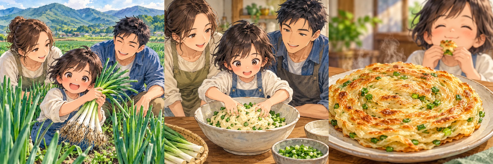
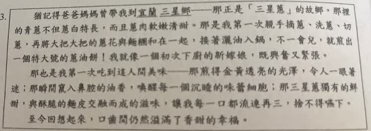
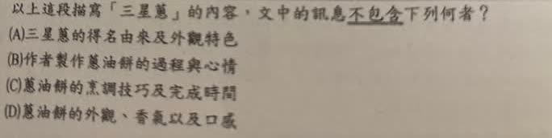

分享原卷｜第13題
完整原題
作答所需文章／材料
猶記得爸爸媽媽曾帶我到宜蘭三星鄉——那正是「三星蔥」的故鄉。那裡的青蔥不但蔥白特長，而且蔥肉軟嫩清甜。那是我第一次親手摘蔥、洗蔥、切蔥，再將大把大把的蔥花與麵糰和在一起，接著澆油入鍋，不一會兒，就煎出一個特大號的蔥油餅！我就像一個初次下廚的新嫁娘，既興奮又緊張。 那也是我第一次吃到這人間美味——那煎得金黃透亮的光澤，令人一眼著迷；那瞬間竄入鼻腔的油香，喚醒每一個沉睡的味蕾細胞；那三星蔥獨有的鮮甜，與酥脆的麵皮交融而成的滋味，讓我每一口都流連再三，捨不得嚥下。 至今回想起來，口齒間仍然溢滿了香甜的幸福。以上這段描寫「三星蔥」的內容，文中的訊息不包含下列何者？
(A) 三星蔥的得名由來及外觀特色
(B) 作者製作蔥油餅的過程與心情
(C) 蔥油餅的烹調技巧及完成時間
(D) 蔥油餅的外觀、香氣以及口感
先想一想，再查看答案、解說與原圖
原卷作答：A（原卷紅筆訂正C）
正確答案：C，文章未提供完整的烹調技巧與明確完成時間。
逐項解析
| 選項與原句 | 判讀 | 句意與判斷理由 |
|---|---|---|
| (A) 三星蔥的得名由來及外觀特色 | 不選 | 開頭說明三星鄉的名稱與產地關聯，並描寫蔥白等特徵。 |
| (B) 作者製作蔥油餅的過程與心情 | 不選 | 製作動作與興奮、緊張的感受都有直接文字。 |
| (C) 蔥油餅的烹調技巧及完成時間 | 應選 | 只略述步驟與不一會兒，沒有具體技巧及明確完成幾分鐘；這不等於完全沒有時間描述。 |
| (D) 蔥油餅的外觀、香氣以及口感 | 不選 | 金黃、油香、鮮甜與酥脆分別提供外觀、香氣及口感。 |
詳細說明與解題步驟
【逐項回到文章找證據】
A開頭點出宜蘭三星鄉與三星蔥的名稱、產地關聯，再寫蔥白特長、蔥肉軟嫩清甜，足以對應此選項。
B摘蔥、洗蔥、切蔥、和麵糰、入鍋煎餅，是製作過程；既興奮又緊張是心情，兩部分都有寫。
C文章是美食回憶，只有概略動作，沒有可照做的用料比例、火候控制等具體技巧，也沒有幾分鐘完成的明確時間，因此以C作為本題應選答案。
D金黃透亮是視覺，油香是嗅覺，鮮甜是味覺，酥脆是口感，均可直接找到文字依據。
【釐清原AI解說過於絕對之處】
原文確實有「不一會兒」，它表達短暫時間，不宜說成沒有時間訊息，更不應逕稱為虛詞。應區分概略時間描述與可操作食譜的明確完成時間；同樣地，有動作步驟，不等於已交代完整烹調技巧。
保留原題與C答案，但用這個範圍差異說明選項，而不是抹去文章已提供的訊息。

① 產地與蔥白，對應A的名稱和特色
文章開頭點出宜蘭三星鄉是三星蔥的故鄉，再寫蔥白特長、蔥肉軟嫩清甜。這些文字能對應名稱與產地關聯，以及外觀特色。
② 粗略動作加上心情，B確實有寫
摘、洗、切、和麵糰、入鍋，構成製作過程；「既興奮又緊張」寫初次動手的心情。有步驟敘述，仍不等於已說明可照做的完整烹調技巧。
③ 金黃、油香、鮮甜與酥脆，D有依據
金黃透亮是眼睛看到的外觀，油香是聞到的香氣，鮮甜是味覺，酥脆是口感。文章重在美食與幸福回憶，這些感官線索都找得到。
④ 美食回憶有感官與過程，不等於完整食譜
答案 C：缺具體技巧與明確完成時間
- 「不一會兒」有短暫時間意義，是概略描述。
- 文中沒有明確多久完成，也未詳述比例、火候。
- 因此選C，不能說原文完全沒有步驟或時間訊息。
核對註記：已依原卷或完整文字核對並獨立解題；對應教材課次未確認，歸綜合。
原圖（僅本題）

